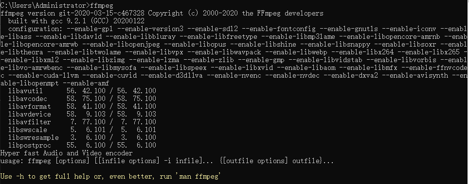
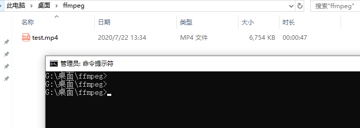
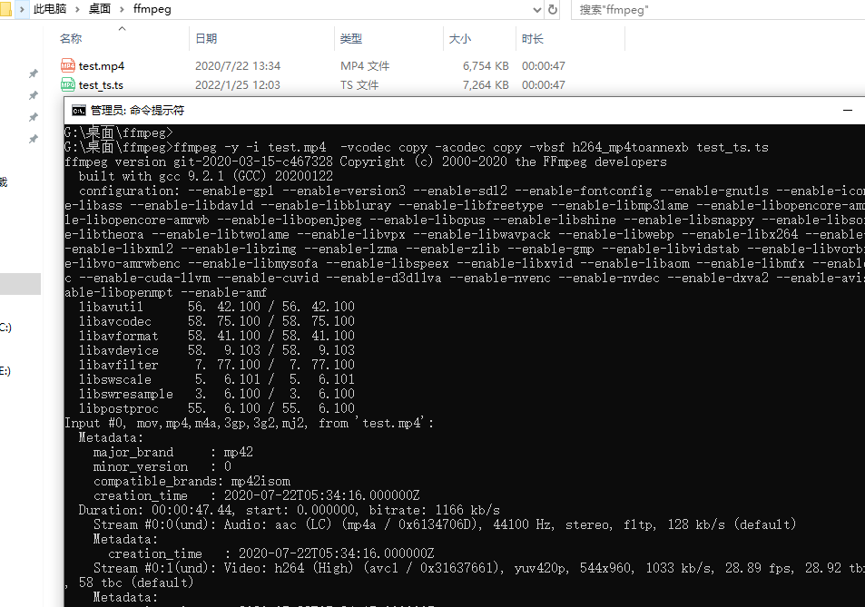
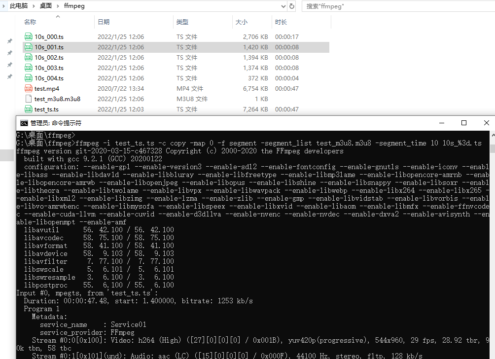
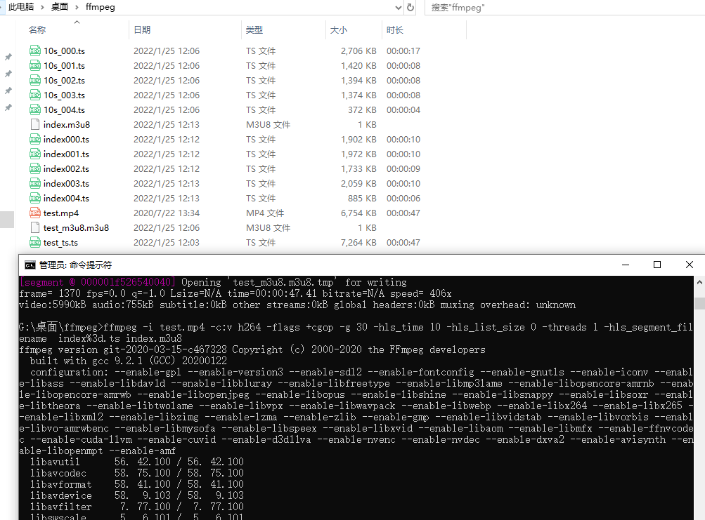

前言
上一篇将了H5如何播放.m3u8文件 H5播放.m3u8视频src 为blob，这一篇讲下如何将常见的大视频文件比如mp4转为.m3u8文件。
如果不将视频切割，直接返回给客户端一个.mp4的文件，小文件还好，如果是一个几个G的大文件，服务器压力大，占带宽，而且视频轻易就被下载。切割成一个个很小的文件可以减轻带宽，服务器压力，同时也为下载原视频增加了难度。通过一些加密手段，就可以进一步增加视频下载的难度了。
ffmpeg 媒体处理神奇
ffmpeg 目前市面上用得最多的媒体处理工具，liunx,windows版本都有，今天我们就用它来切割mp4文件
安装ffmpeg
下载解压后，配置好环境变量
开启doc，执行ffmpeg

出现上图说明ffmpeg已经配置好
切割视频
准备一个视频，打开doc，切换到该目录

生成.ts
ffmpeg -y -i test.mp4 -vcodec copy -acodec copy -vbsf h264_mp4toannexb test_ts.ts

此时会生成一个.ts的文件
生成索引文件.m3u8 和切片.ts
ffmpeg -i test_ts.ts -c copy -map 0 -f segment -segment_list test_m3u8.m3u8 -segment_time 10 10s_%3d.ts

可以看到 生成.m3u8索引文件，还有很多分片.ts文件。ts文件可以直接打开播放
-segment_list 索引文件名
-segment_time 10 每个分片时长 这个貌似不是特别的精准
10s_%3d.ts 索引文件前缀和索引编号这里是3个0补全
一步到位
ffmpeg -i test.mp4 -c:v h264 -flags +cgop -g 30 -hls_time 10 -hls_list_size 0 -threads 1 -hls_segment_filename index%3d.ts index.m3u8

一步到位就一个命令，但是耗时比较长，推荐使用第一种用两步完成，也可能是我对ffmpeg不熟悉，是不是哪个参数设置的不对，有ffmpeg高手可以指点一下。
更多ffmpeg参数可以自行搜索，这里重点不是ffmpeg，只是简单的介绍ffmpeg如何切割视频生成.m3u8 索引文件，还可以对切割文件加密生成key，没有key直接打开切片文件是无法打开的。
我们生成了.m3u8，和.ts切片，然后配合h5播放器，就可以实现本地视频播放了。